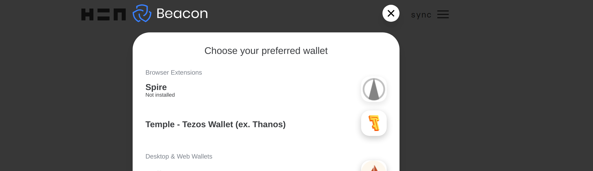
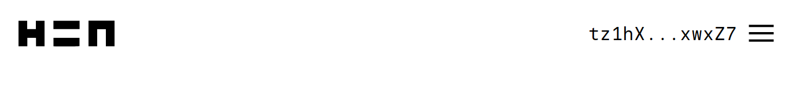
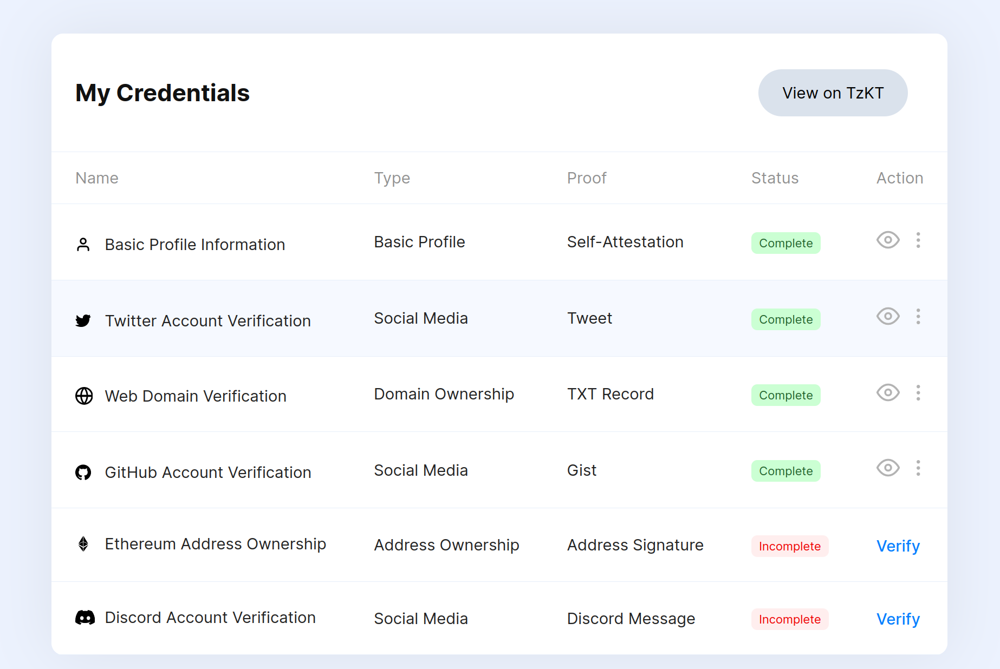
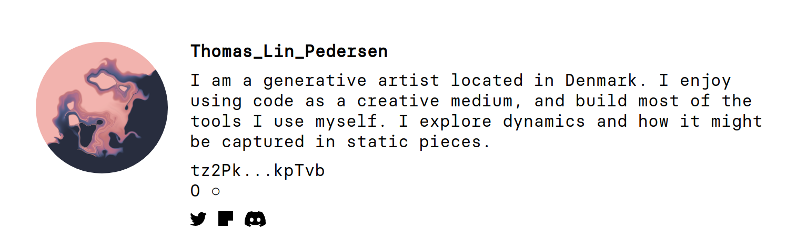

It is no secret that I feel conflicted about selling NFTs from my artwork: Im on record in multiple places expressing my reservations (e.g., here and here), and I think there are many perfectly good reasons why a generative artist might not want to sell NFTs. There are also sensible reasons why a generative artist would want (or need) to sell NFTs. This post isnt about passing judgment one way or the other, especially since I dont know which way I want to go myself. Nor is this intended as a what is blockchain? or what is an NFT? kind of post. Im assuming that anyone reading it has a vague understanding of the gist of what these things are (which, frankly, is all I have too). Its a different kind of post, one aimed at addressing a practical issue: barriers to entry.
There are barriers
One thing I have noticed about the world of cryptoart is that there are many barriers to entry. Some barriers are obvious: if you want to sell art on Foundation, for example, you need to be invited. To be invited, you need to know someone who can and will invite you, and as anyone who has ever been excluded from a fancy venue by virtue of their race, gender, sexual orientation, transgender status etc can attest, this is a non-trivial barrier. By-invitation systems create barriers by design: they are, unfortunately, inherently exclusionary.
Another kind of barrier comes from the nature of cryptoart. Blockchains were not designed to be energy efficient, and they can be extraordinarily wasteful (much more than youd think). Environmental considerations also create barriers to entry. This is especially true for proof of work (PoW) blockchains that are staggeringly wasteful of computation time. The biggest art markets appear to be based on the Ethereum chain, which (for the time being, at least) uses proof of work, and seems indefensible from an environmental perspective. To my mind that also rules out OpenSea: despite being the largest marketplace and the easiest one to set up on (e.g., I have an unused account that I set up in a few minutes), it may be unacceptable to many artists for that reason.
As an alternative, there are proof of stake (PoS) blockchains that dont require anywhere near as much computation, and as a consequence are much more energy efficient. Im sure a true enthusiast could tell me a lot more about the different proof of stake chains, but the one Im most familiar with is Tezos. Because I have a personal aversion to by invitation systems and because I really dont want the planet to burn, this is appealing to me. Happily, there is an NFT art marketplace based on the Tezos chain which goes by a fancy latin name hic et nunc: it translates to here and now, Im told, and is often abbreviated to HEN or H=N. Also happily, you dont need an invitation, you dont need to join a club, you can just join. Best of all, there are several artists from the R community who are already on HEN. To my mind this is a big selling point because I actually like the R community. There are very few tech communities that have ever made me feel at home, and I deeply value those that do. Im entirely certain that there are others I dont know about yet, but so far on HEN Ive found Thomas Lin Pedersen, Will Chase, Antonio S. Chinchn, and George Savva. And as of a few days ago, Im there too.
Community! Yay!
If theres one thing I have learned from the lovely R folks on twitter, everything is better when you are part of a supportive team of people who actually care about each other and work to build each other up. From my perspective, this makes HEN the most promising option.
Unfortunately, one big limitation to HEN is that it isnt easy to get started there. The user interface is weird, the how to guides arent easy to read, and there are a lot of things that just dont make any sense until after youve done all the work of figuring it out. That sucks, and it is also a barrier to entry. And while I cant do anything to make Foundation less exclusionary, nor make OpenSea less of an environmental disaster, I can do something to make it easier for other R folks to get started on HEN, just by writing a post walking you through the process. That seems like a valuable thing to do.
So lets say youre at the same point I was at a few days ago. You have a vague idea what cryptocurrencies are (yeah, yeah, digital currency we all know that by now), and you have a vague idea of what an NFT is (basically, its just a way of making a digitally signed copy of the art). Maybe youve sort of heard of HEN because youve seen some of the R people posting about it, and thats it. Thats all you know. But maybe you want to try it out, just to see if its for you? But you really, really, reaaaaaalllllllly dont want to wade into all the details. Hopefully this post will help.
Step 1: Open a wallet
The most counterintuitive thing for me was that you dont start by opening a HEN account, and in fact at no point do you have a HEN account in the traditional sense. Everything is handle via your wallet. Your wallet is used to store tezos (abbreviated to tez or tz), the digital currency that is used to buy and sell art, but it also serves the role of establishing your identity. Its awfully capitalist: who you are is inherently tied to the source of your money. Sigh. However, on the plus side, youre allowed to be poor on blockchain (again: capitalism) you can create the wallet without putting any money in it. Frankly, I think thats the safest thing to do.
Okaaaay at this point youd probably be wondering where do I sign up for one of these wallets? Excellent question. If you go and take a peek at the rather sparse documentation on the HEN website youll see that they have a few different suggestions. Its nice to be offered choices, but also anxiety-provoking when you dont even know what the differences are. I chose Temple Wallet for two reasons: it was the first one they listed, and because I was talking to Will Chase about how confused I was and he told me hes been using that one. I suspect the choice is arbitrary though.
Awesome, so now youre clicking through to open an account with Temple Wallet and wait, its a browser extension? Yup. This seems to be very common, and it sort of makes sense because you end up having to validate everything you do (with annoyingly tedious frequency) by clicking on the confirm button on a little dialog box that the browser extension creates. I use Firefox as my primary browser, so I installed the Firefox version.
Moving on the next little strangeness is that when you set up the wallet you dont create a username, only the password, and youll be given a recovery phrase, which is a sequence of 12 random words. Dont lose either of these things. Here, as always, I strongly recommend that you use a password manager to store your password, because there are fewer options for recovery if you start losing things. Ive been using 1password for a few years and I really like it. Seriously: use a password manager, store your wallet password there and store your recovery phrase there too. Somewhere along the way, you get a public identity, which will be a long string of complete gibberish. This, for example, is me:
tz1hXKn2BcU64HxSrmojfuf7cDoweJ9xwxZ7which of course I have committed to heart because I loooooooooooove memorising long strings of alphanumeric characters. Yeah, okay this is rubbish, youre going to need an actual name. Well get to that a little bit later but the key thing for now is that this string is both a public identifier and a bank account number. If you wanted to donate some tez to me, then all you need is that annoying string.
Step 2: Sync your wallet with HEN
When you go to the HEN website youll see a little bit of text on the top right hand side that has a link that says sync. Click on that:

This will bring up an ovelay that looks like this:

If you chose a Temple wallet choose the Temple - Tezos Wallet (ex. Thanos) option. It might ask for your password at this point but it probably wont if youre already logged in. What youre more likely to see is a screen like this:

This is a message from your wallet asking you to confirm that yes, you do want to synchronise with HEN (it also shows you that I currently have a balance of 11 tez, which I guess is something like US$60). Click on connect, and HEN will now be synchronised with your identity. You can see that because the menu at the top now looks something like this:

Youre now synced: in effect, you are now logged in to HEN. You still dont have a username, but you have authenticated yourself and you can now change some settings.
Step 3: Give yourself a name, avatar and bio on HEN
The time has come to give yourself a name. If you do things in the right order and with the right mental model of whats going on, this is pretty easy to do, but its easy to get a little confused because there are actually multiple things going on here, and you always have to keep in mind that your equivalent of my Smurf string is your actual identity.
So your first step is to tell HEN to link your Smurf strng to a name, bio and avatar. This is easy and it doesnt cost you any money. You click on the menu, and youll see this screen:

As with everything about HEN, its very minimalist and slightly atypical, but its just a menu, same as on any other website. Click on edit profile. This brings up another slightly unconventional looking screen that has several options you can set. Heres what mine currently looks like:

There are three easy options here:
- If you click on choose file you can give yourself an avatar
- If you type something under username you can have a username
- If you type something under description you get a bio.
For the username, you should avoid spaces and special characters, and use lowercase letters because usernames are case sensitive. For R users, that should feel familiar: write your username in snake_case or kebab-case
Once youre happy you can click save profile and assuming that HEN isnt running slowly like was when I got set up youre all set. Yay!
There are a few other things to notice here. First when you clicked save profile it didnt set up a twitter link or anything. In fact, despite the close proximity of the save profile button and the text underneath, those two things arent related. When the time comes to set your twitter etc, ignore the save profile button completely. Instead, you need to rely on the text. Though its obnoxiously hard to find, the words Tezos Profiles in the screenshot above is in fact a link. Later on (not now!) you can click on that link and you can do other things like verify your twitter account, github account etc. However, thats surprisingly finicky to do and it costs money, so leave that until later.
Second notice that your username functions as an alias, but its only an alias. The canonical link to my user profile is this ugly thing that includes the Smurf:
https://www.hicetnunc.xyz/tz/tz1hXKn2BcU64HxSrmojfuf7cDoweJ9xwxZ7
However, because Ive set up my username on HEN to be djnavarro this link will redirect automatically to a more handy profile page:
https://www.hicetnunc.xyz/djnavarro
Even so, its important to remember that this is just a convenience, and its specific to HEN. There are other websites that are linked to the same art ecosystem, and youll find that your Smurf equivalent will tend to follow you around across those websites because thats a public identifier. In contrast, only HEN knows that Im also djnavarro, so this alias wont necessarily follow me to other sites. But whatever. Right now thats not super important. We can deal with that later.
For more information about editing your profile, you can check out the HEN FAQ page.
Intermission: Just browse for a while!
Theres more stuff you can do to get your account set up, but you might want to take a little breather and look for some art. Maybe you want to search for someone you know in the R community who might be on HEN, and youd like to find them. The actual HEN website isnt very good for that. If you look at the front page, all you see is art scrolling by
Theres no structure, just a timeline showing the pieces one at a time as they are minted. Its not searchable or browsable. This is annoying, but there are alternatives. After all, the actual pieces are all public and on the tezos blockchain so other sites can hook into it and display the same pieces in a different way. The HEN explorer website is pretty handy here:
There are things you can browse and even a search box. Its a little clunky (e.g., I found the search box didnt always act as I was expecting) but it does the job. This was how I found the other R people I knew about! So if you want to take a moment to explore, this is a pretty good place to go.
Step 4: Get some money
Remember when I said that everything about this oozes capitalism? I really meant it: its hard to do much without spending money, and were rapidly reaching the point where youll need a little bit. Thankfully, you dont need very much, and theres a good chance you can ask a friend to help out here (I hope!) I reached out to Will Chase and Thomas Lin Pedersen, and they were both kind enough to each transfer a few tez into my account. You probably wont need much: I whole bunch of mistakes getting set up, and as a consequence spent more money than I needed to, but even with all that it cost less than 1 tez (again, thats currently about $5 in US dollars) for me to get everything up and running.
Theres a part of me that hopes that the R community will look after its own here: I havent forgotten that Will and Thomas helped me get started (and Antonio offered to help out too!), and so if I sell a few pieces Id like to return the favour to anyone else looking to get started. Pay it forward folks!
That said, Im also not naive. It doesnt always work that way. The HEN website has some suggestions for other places you can ask for help. And of course, theres always the option of speding some real money to by a few tez to get started. If you want to take that option, thats the point at which youd have to sign up with one of the exchanges. This is probably something that youd want to research yourself since it will probably be different based on what country youre in, but I went with one of the ones listed on the HEN wiki and signed up with Kraken. That part is tedious but very traditional: at this point youre beginning to deal with financial institutions so youll sign up for accounts, verify your identity with official documents, and link it to your bank accounts. Its annoying and time consuming, but theres nothing that wouldnt be familiar to you if you have a PayPal account and a bank account. Plus, if you do end up making money from your art youll probably want to convert it back to regular money and transfer it to your bank account, and for that youll have to go through that process anyway.
One way or another, Im hoping that at this point you have a few tez to start out!
Step 5: Verifying your identity
At this point you might want to take some steps to link your Smurf identity with your real life identity. Sure, you know who you are and you can attest to that fact, but the crypto world apparently wants more proof, and they are tediously fixated on non-traditional ways to do that. It annoys me, but these are the hoops artists have to jump through right? So lets do this.
The first thing to realise (something that is not well signposted on the sites), is that there are at least two different systems involved and when you go googling for information youll find information about both of them. It can get confusing. So lets take then one at a time.
tzprofiles.com
Go back to the HEN website, click on the menu and select edit profile again. Then go click on the almost-impossible-to-detect Tezos Profiles link that I foreshadowed earlier. That will take you to https://tzprofiles.com/, and there is a very prominent connect wallet button. Click on that button, confirm with your wallet that you want to allow tzprofiles to connect (the little popup window will appear, like it always does), and then youll see a screen that looks like this:

There are several different things you can do here, and any of them that you verify on tzprofiles will eventually end up on HEN. For example, if you want to verify your twitter account, youll go through a series of elaborate steps (which, yes, will have to be confirmed with your wallet) and in the end youll be forced to send a tweet like this one:
https://twitter.com/djnavarro/status/1440133754333237248
To verify your GitHub account its pretty similar, except that you end up being forced to create a gist. For your website it forces you to create a DNS record (which annoyed the hell out of me because it overwrote my existing DNS records and borked my webpage until I worked out how to fix it was not pleased). Frankly Im not sure that verifying the website is worth the effort. I wasted a lot more time on that than I wanted to. Oh well.
In any case, once youre done, I think you have to use your wallet to confirm again (Ive forgotten, but I think you do) to allow HEN to use your profile on tzprofiles.com, but once youve done that, youll see some icons appear on your HEN page, linking to your twitter account, github account, etc:

At this point your HEN account is meaningfully linked to your other public identities, and any artwork you create can be verifiably be linked to you (and not just your Smurf). You can skip the next part if you want.
tzkt.io
All right. If youre like me youve probably been exploring as you go and youve been encountering some other sites that seem connected to this ecosystem. One of them I mentioned earlier (i.e., https://henext.xyz). But at some point youve probably clicked on a link attached to your Smurf and its taken you to https://tzkt.io. Most likely it took you to a page that looks like this, and appears to be (and is) showing a bunch of transactions:
https://tzkt.io/tz1hXKn2BcU64HxSrmojfuf7cDoweJ9xwxZ7/operations/
Youll probably end up back at tzkt.io quite a bit, I suspect, because its the place that everything seems to link to to display transactions. On my page theres is a log of all the things Ive been doing on the tezos blockchain. It looks something like this:

A lot of it is gibberish, but you can kind of see whats going on here. Yet again you can see my Smurf, theres a bunch of transactions that show me minting NFTs, etc. It makes a kind of sense.
What doesnt make any sense (at least not at first), is that my Smurf is not linked to my identity. My avatar is missing (that kitty is a randomly assigned avatar, not something I chose), and none of those links go anywhere. Theres a space for me to have a twitter link, a github link, etc, but they are empty. That seems weird, because I already verified my twitter and github, right?
Well, yes, I did. But I verified those accounts with the other site: https://tzprofiles.com/ knows who I am and has shared that information with HEN, but it hasnt shared anything with https://tzkt.io. This is mildly annoying because other sites in the HEN ecosystem all seem to be looking to https://tzkt.io in order to get profile information about me. Unlike HEN itself, they arent getting information from https://tzprofiles.com/.
A good example of this is https://objkt.com/, a site that you can use to auction off your artwork rather than set fixed prices for them (more on that later!) In exactly the same way that the HEN explorer site is able to show all the artwork minted through HEN (and hence you will automatically exist on https://www.henext.xyz/ if you exist on HEN), you automatically exist on objkt.com too, and your profile page is drumroll, please your Smurf. So heres me:
https://objkt.com/profile/tz1hXKn2BcU64HxSrmojfuf7cDoweJ9xwxZ7/creations

As you can see, it has my Smurf and it is showing pictures of art Ive minted through HEN, but somehow it doesnt show anything about me! In contrast, if you look at Thomas Lin Pedersens page there, it has an avatar, a name, and a bio.
https://objkt.com/profile/tz2Pkj2xWJovKKCsABjnr3NbyMVJTMBkpTvb/creations

In fact, come to think of it, his profile on https://tzkt.io shows the exact same avatar, name, and bio:

No fair! I want one of those too! What magic does he know that I dont? Well, one clue is to look at his HEN page and note that the bio is slightly different, and the social media icons on his HEN page are slightly different to the social media icons on his OBJKT page:

To cut a long story short, OBJKT is pulling the information from TZKT. So if you want to have a profile on OBJKT too, youll have to verify yourself on TZKT. Gr. Luckily for me (because I am tired of this post already!) theres a good write up of how to do that on the Baking Bad blog:
https://baking-bad.org/blog/2021/09/19/tzkt-alias-verification-f-a-q/
This isnt a random website either. Its linked to the people who actually run TZKT. The long and short of it is that youll have to fill out a Google Form and then wait for a few days while they manually verify it. Eventually (hopefully), your profile will show up on TZKT and then on OBJKT.
Step 6: Mint some art
Step 7: Buy and sell art